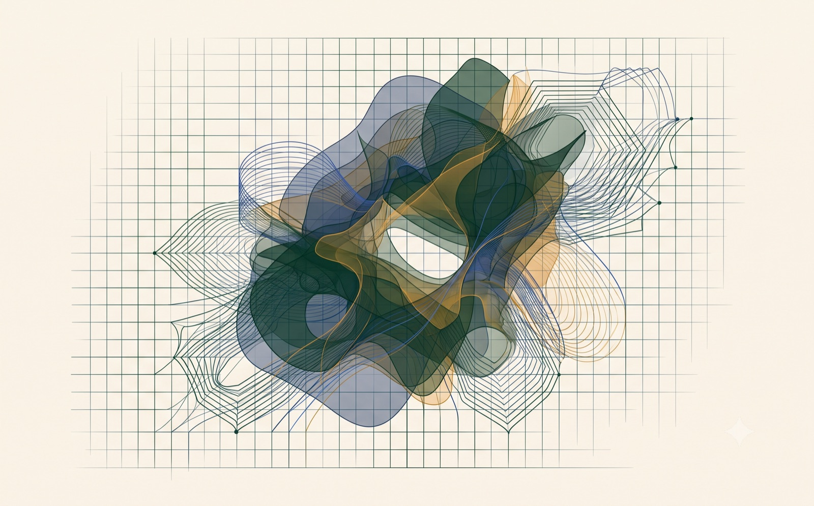
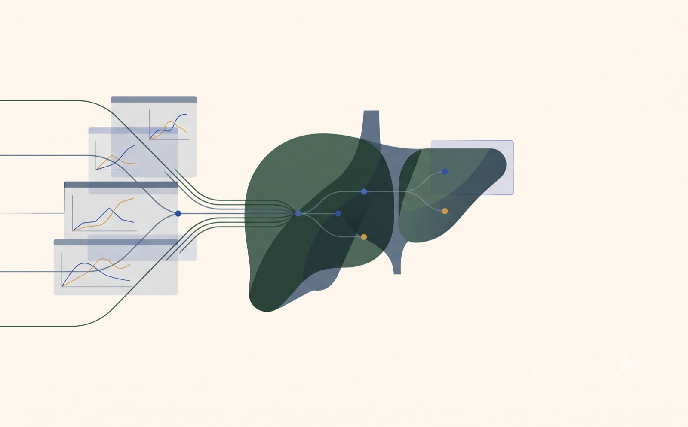
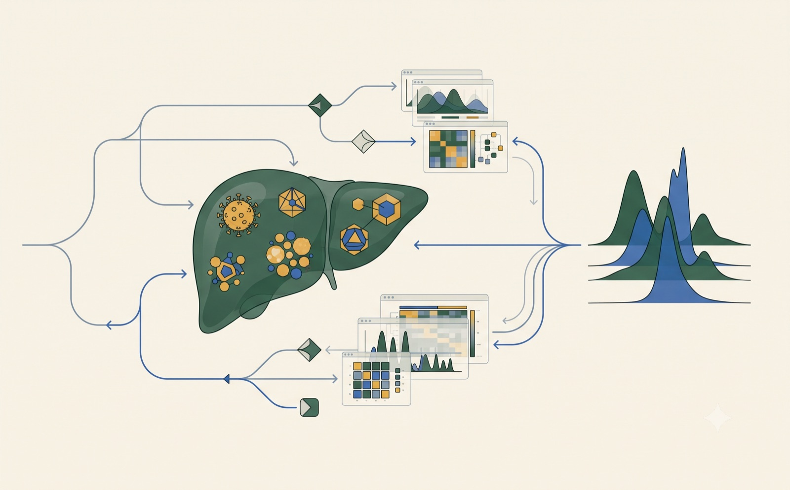
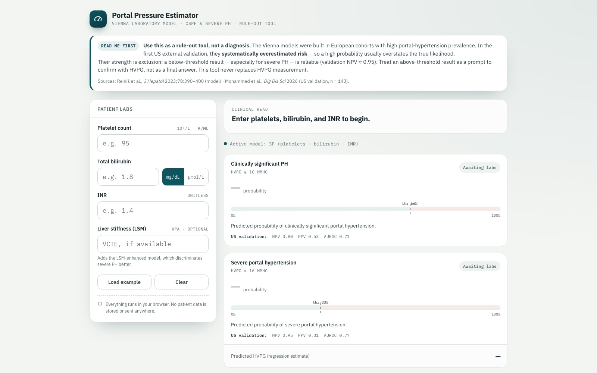
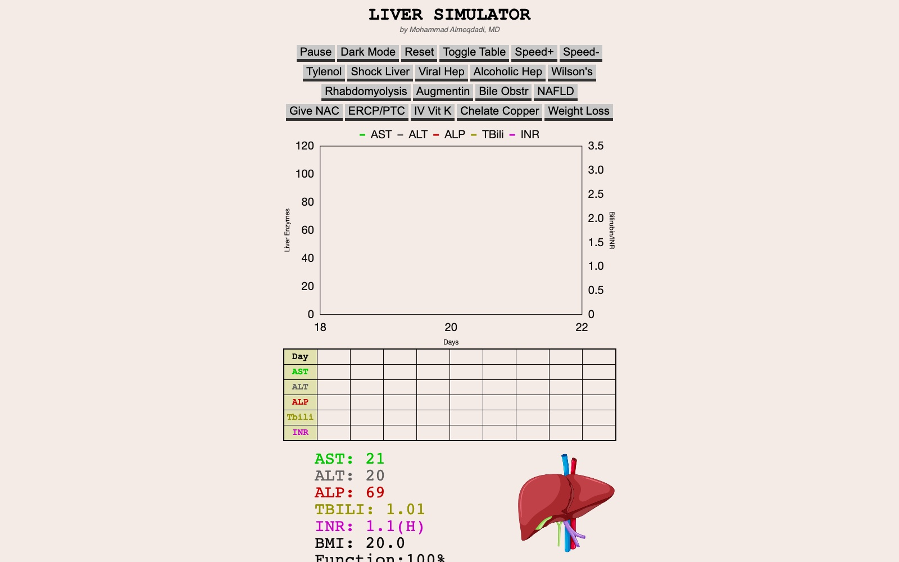
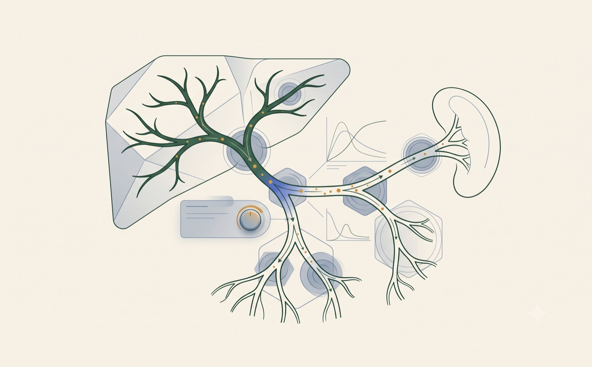
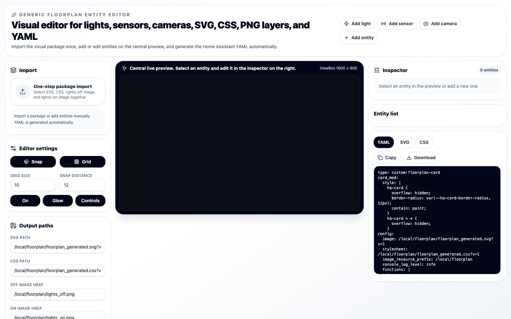

Projects
Medical tools, simulations, and software.

Creative technology Abstract Atelier PubMed-aware editor for medical writing.
Clinical tool Acute Liver Injury Cases Case-based liver panel interpretation.
Clinical tool Liver Enzyme Backtracker Estimate prior enzyme values from half-lives.
Clinical tool Portal Hypertension Predictor Clinical calculator for portal hypertension.
Medical simulator Liver Simulator Interactive liver injury and treatment model.
Medical simulator Portal Pressure Simulator Explore portal flow, resistance, and pressure.
Design and automation HA Floorplan Editor Visual editor for Home Assistant floorplans.